复杂计算单元与指令集
数据格式与复杂计算单元¶
加法器设计¶
Ripple Carry 加法器¶
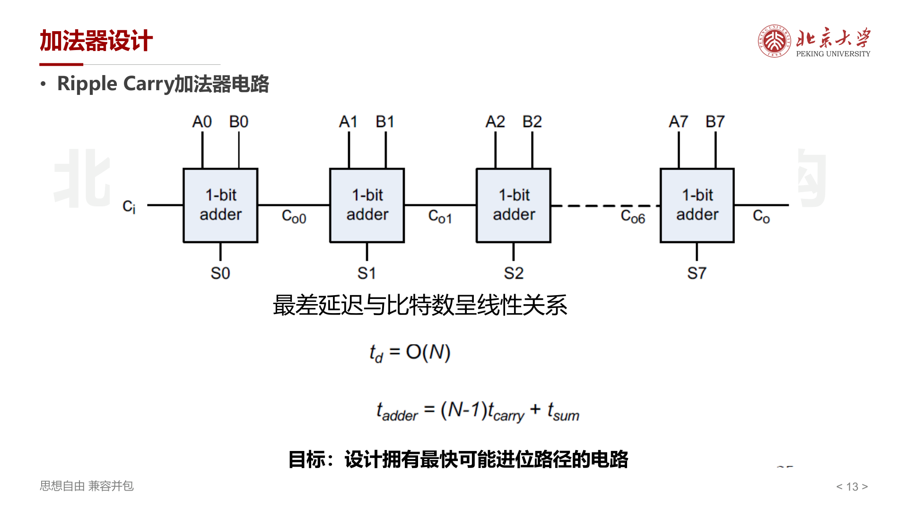
将多个 1-bit 全加器串联，前一级的 \(C_{out}\) 作为下一级的 \(C_{in}\)。
- 最差延迟与比特数呈 线性关系 ：\(t_d = O(N)\)
- \(t_{adder} = (N-1) \cdot t_{carry} + t_{sum}\)
- 目标：设计拥有最快可能进位路径的电路
基于 PGK 的加法器设计¶
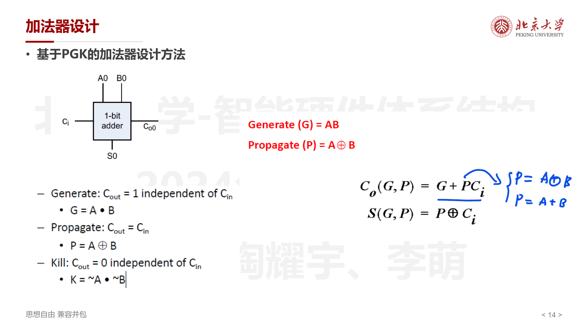
Ripple Carry 加法器的瓶颈在于 进位链 ——每一位的进位都依赖前一位的结果，必须串行等待。PGK 方法的核心思想是：预先判断每一位会如何处理进位 ，从而打破串行依赖。
对每一位，根据输入 \(A_i\) 和 \(B_i\) 的值，进位行为只有三种可能：
- Generate （\(G_i = A_i \cdot B_i\)）：当 \(A_i = B_i = 1\) 时，无论进位输入 \(C_{in}\) 是什么，一定会 产生 进位 \(C_{out} = 1\)
- Propagate （\(P_i = A_i \oplus B_i\)）：当 \(A_i \neq B_i\) 时，进位输出 等于 进位输入，即 \(C_{out} = C_{in}\)，进位被"传播"
- Kill （\(K_i = \overline{A_i} \cdot \overline{B_i}\)）：当 \(A_i = B_i = 0\) 时，无论 \(C_{in}\) 是什么，进位一定被 消灭 ，\(C_{out} = 0\)
注意 G、P、K 三者互斥且完备（恰好覆盖所有情况），因此只需要 G 和 P 就能完全确定进位行为（\(K = \overline{G} \cdot \overline{P}\)）。
利用 G 和 P，进位和求和可以统一表达为：
直观理解：要么自己产生进位（G），要么把别人的进位传过来（\(P \cdot C_i\)）。
从单比特到多比特：组合 PG¶
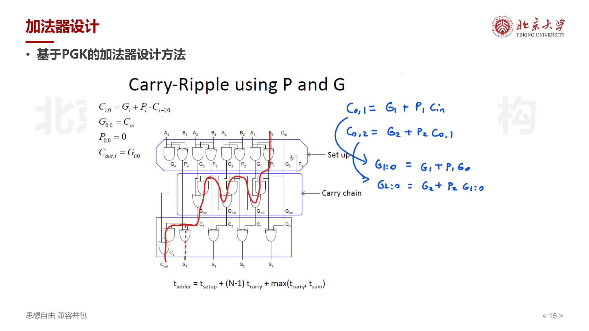
单比特的 G 和 P 可以 逐级合并 ，得到覆盖多位范围的"组合 PG"。定义 \(G_{i:0}\) 表示"第 0 位到第 \(i\) 位这个范围内，是否会产生进位"：
展开递推可以得到：
- \(G_{1:0} = G_1 + P_1 \cdot G_0\)（含义：第 1 位自己产生进位，或者第 1 位传播、且第 0 位产生进位）
- \(G_{2:0} = G_2 + P_2 \cdot G_{1:0}\)
初始条件 \(G_{0:0} = C_{in}\)，\(P_{0:0} = 0\)。最终每一位的进位输出 \(C_{out,i} = G_{i:0}\)。
如果仍然逐级串行计算 \(G_{i:0}\)，延迟还是 \(O(N)\)，但关键在于：合并操作满足结合律 ，可以用树形结构并行计算！
延迟：\(t_{adder} = t_{setup} + (N-1) \cdot t_{carry} + \max(t_{carry}, t_{sum})\)
PG 合并的三种基本单元¶
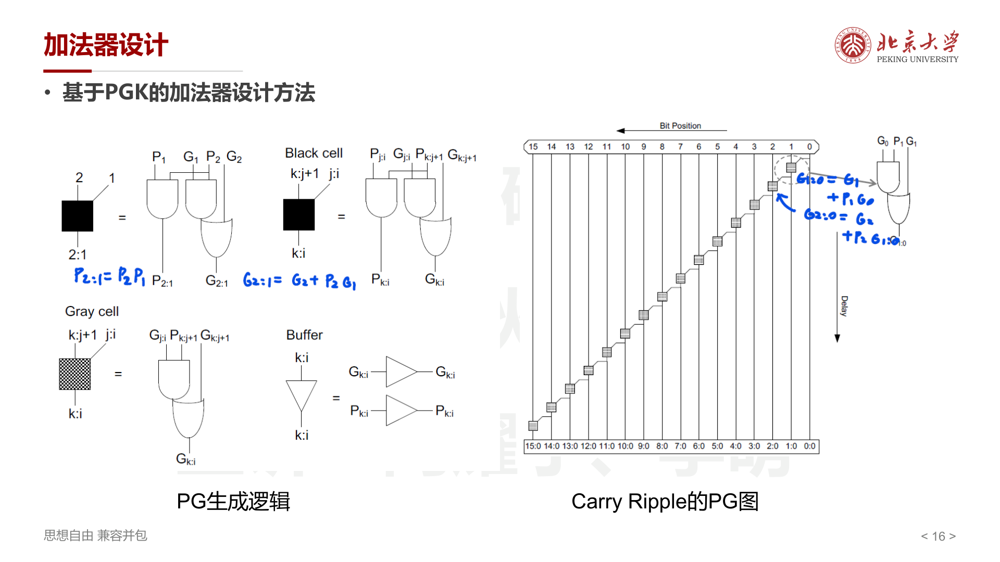
为了构建树形结构，定义三种基本硬件单元：
- Black cell ：将两个相邻区间的 PG 合并为一个更大区间的 PG
- 输入：左区间 \((P_{j:i}, G_{j:i})\) 和右区间 \((P_{k:j+1}, G_{k:j+1})\)
- 输出：合并区间 \((P_{k:i}, G_{k:i})\)
- 公式：\(P_{k:i} = P_{k:j+1} \cdot P_{j:i}\)，\(G_{k:i} = G_{k:j+1} + P_{k:j+1} \cdot G_{j:i}\)
- 直观理解：大区间的 Propagate 要求每一位都 Propagate；大区间的 Generate 要么右半产生，要么右半传播且左半产生
- Gray cell ：只输出 \(G_{k:i}\)（不计算 \(P_{k:i}\)），用于最终进位输出的位置（因为最终只需要 \(G_{i:0}\) 来得到进位，不再需要向后传播 P）
- Buffer ：简单转发 \(G_{k:i}\) 和 \(P_{k:i}\)，用于对齐延迟
复杂 PG 树加法器¶
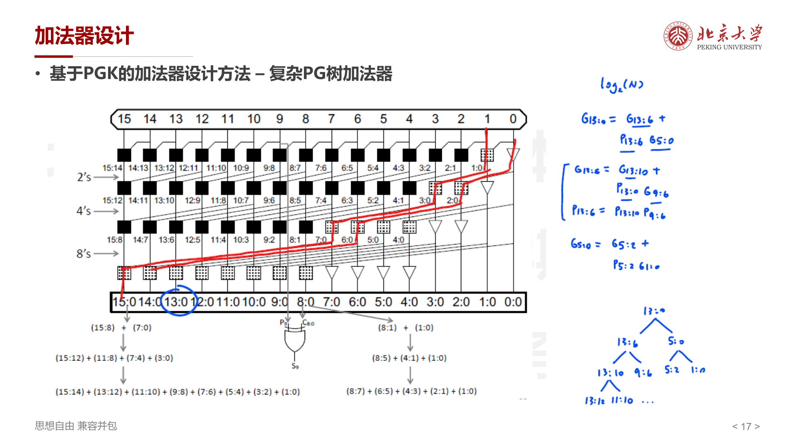
有了可结合的合并操作和基本单元，就可以构建 树形结构 并行计算所有 \(G_{i:0}\)，将进位延迟从 \(O(N)\) 降低到 \(O(\log N)\)。
以 16 位加法器为例，树的工作过程：
- 第 1 层（2's） ：每两个相邻位合并，得到 \(G_{1:0}, G_{3:2}, G_{5:4}, \ldots\)
- 第 2 层（4's） ：每两个 2-bit 区间合并，得到 \(G_{3:0}, G_{7:4}, \ldots\)
- 第 3 层（8's） ：合并为 8-bit 区间，得到 \(G_{7:0}, G_{15:8}\)
- 第 4 层 ：最终合并得到 \(G_{15:0}\)
每一层只需 1 级门延迟，总共 \(\log_2(16) = 4\) 层，远快于 Ripple Carry 的 15 级。
但不同的树形拓扑在 逻辑层数、扇出（fanout）和布线复杂度 之间存在不同的权衡：
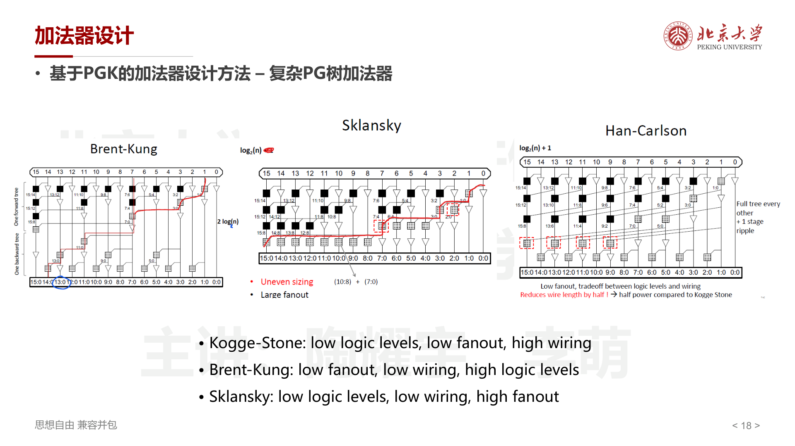
| 结构 | 逻辑层数 | Fanout | 布线复杂度 | 特点 |
|---|---|---|---|---|
| Kogge-Stone | \(\log_2(N)\) | 低 | 高 | 每一层每个位置都有 black cell，布线最密集但延迟最低 |
| Brent-Kung | \(2\log_2(N)\) | 低 | 低 | 先向上合并（forward tree）再向下分发（backward tree），节省面积 |
| Sklansky | \(\log_2(N)\) | 高 | 低 | 布线简单但高层的 fanout 指数增长，需要更大的驱动 |
| Han-Carlson | \(\log_2(N)+1\) | 低 | 中 | Kogge-Stone 的隔一取一 + 1 级 ripple，布线减半，功耗约为 Kogge-Stone 一半 |
实际设计中的选择取决于具体约束：追求极致速度选 Kogge-Stone，面积受限选 Brent-Kung，需要平衡则选 Han-Carlson。
乘法器设计¶
基本原理：为什么乘法比加法难¶
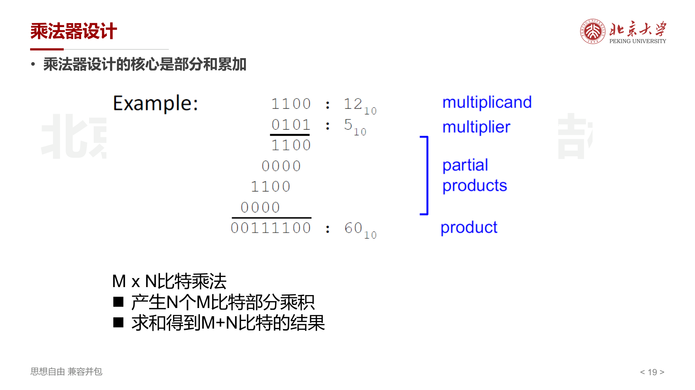
回忆小学学的竖式乘法：把乘数的每一位分别与被乘数相乘，得到多个 部分乘积（partial products） ，再对齐相加。二进制乘法完全一样，只是每个部分乘积要么是 0（该位为 0），要么是被乘数本身左移若干位（该位为 1）。
\(M \times N\) 比特乘法：
- 产生 N 个 M 比特部分乘积
- 求和得到 \(M+N\) 比特的结果
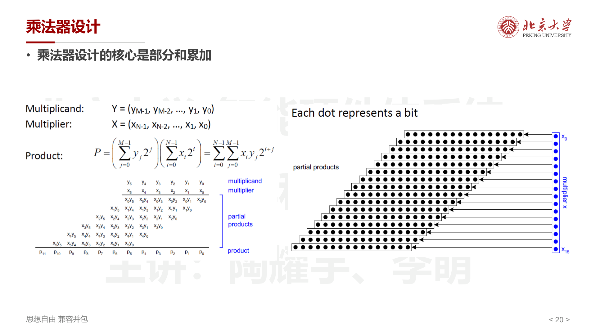
上图中每个点代表一个 1-bit 乘积 \(x_i \cdot y_j\)（即一个 AND 门的输出）。乘法器设计的核心问题就是 如何高效地把这些点加起来 。
阵列乘法器：最直接的实现¶
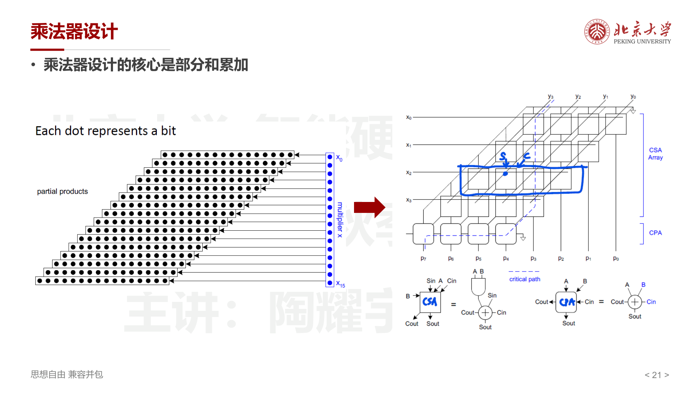
最直观的做法：用一行行的加法器，从上到下逐行累加部分积。
- CSA（Carry Save Adder） ：每个 CSA 接收三个输入（上一行的 Sum、Carry 和新的部分积），输出两个值（新的 Sum 和 Carry），而 不传播进位 。这使得每一行的延迟是固定的（一个全加器的延迟），与位宽无关。
- CPA（Carry Propagate Adder） ：最后一级需要一个普通加法器（如 Ripple Carry 或 PG 树加法器）将最终的 Sum 和 Carry 相加，产生进位传播。
关键路径延迟 = \((N-1)\) 行 CSA 延迟 + 1 个 CPA 延迟。CSA 部分是 \(O(N)\)，CPA 部分取决于加法器类型。
为什么要减少部分积数量¶
阵列乘法器的 CSA 部分延迟正比于部分积的行数 N。如果能 减少部分积的行数 ，就能直接减少 CSA 层数，从而降低延迟。
Radix 编码：分组减少部分积¶
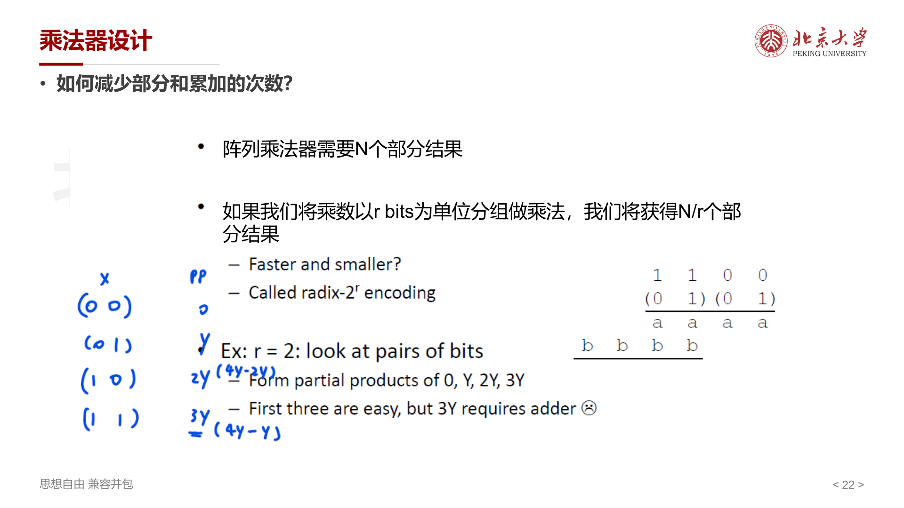
核心思想：不再逐位查看乘数，而是 每 \(r\) 位一组 。这样部分积从 N 个减少到 \(N/r\) 个。
以 \(r = 2\)（Radix-4）为例：每次看乘数的 2 位，部分积可能是 \(0, Y, 2Y, 3Y\)。
- \(0\)：直接跳过
- \(Y\)：就是被乘数本身
- \(2Y\)：被乘数左移 1 位（硬件中只需要接线，不需要逻辑门）
- \(3Y\)：这是问题所在——\(3Y\) 无法通过简单的移位得到，需要一个额外的加法器来算 \(2Y + Y\)
\(3Y\) 的问题促使了布斯编码的发明。
布斯编码的核心思想¶
布斯编码的核心洞察是：\(3 = 4 - 1\)，即 \(3Y = 4Y - Y\)。
而 \(4Y\) 恰好是下一组部分积的权重（左移 2 位），可以 向下一组"借位" 。这样所有部分积都只需要 \(0, \pm Y, \pm 2Y\)，全部可以通过 移位和取反 实现，不需要额外的加法器！
类似地，\(2Y\) 也可以表示为 \(4Y - 2Y\)，向下一组借位。
Radix-4 布斯编码推导¶
将补码数 \(y\) 按两位一组重新分组。补码表示下：
通过在每两位边界处加减相同的项（配对消去），可以整理为：
每组括号内 \((-2y_{2i+1} + y_{2i} + y_{2i-1})\) 的取值范围是 \(\{-2, -1, 0, 1, 2\}\)，恰好对应 \(\{-2Y, -Y, 0, Y, 2Y\}\)。
布斯编码表¶
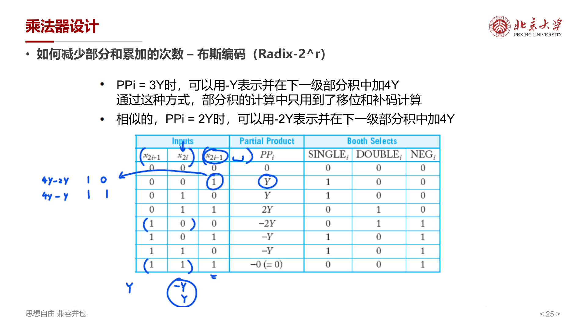
查看 \((x_{2i+1}, x_{2i}, x_{2i-1})\) 三位（注意 \(x_{-1} = 0\)），部分积的选择和控制信号如下：
| \(x_{2i+1}\) | \(x_{2i}\) | \(x_{2i-1}\) | 部分积 \(PP_i\) | SINGLE | DOUBLE | NEG |
|---|---|---|---|---|---|---|
| 0 | 0 | 0 | 0 | 0 | 0 | 0 |
| 0 | 0 | 1 | Y | 1 | 0 | 0 |
| 0 | 1 | 0 | Y | 1 | 0 | 0 |
| 0 | 1 | 1 | 2Y | 0 | 1 | 0 |
| 1 | 0 | 0 | -2Y | 0 | 1 | 1 |
| 1 | 0 | 1 | -Y | 1 | 0 | 1 |
| 1 | 1 | 0 | -Y | 1 | 0 | 1 |
| 1 | 1 | 1 | -0 (=0) | 0 | 0 | 1 |
硬件实现只需要 3 个控制信号：
- SINGLE ：选择 \(\pm Y\)
- DOUBLE ：选择 \(\pm 2Y\)（Y 左移 1 位）
- NEG ：取补码（按位取反加 1）
布斯编码要求：
- 乘数、被乘数、结果均为 补码
- 乘法计算前在乘数末尾补零（\(x_{-1} = 0\)）
- 被乘数使用 双符号位 （保证 \(-2Y\) 不溢出）
- 符号位参与计算
布斯编码计算实例¶
例 1： \(Y \times Q = -6 \times -7\)（4bit）
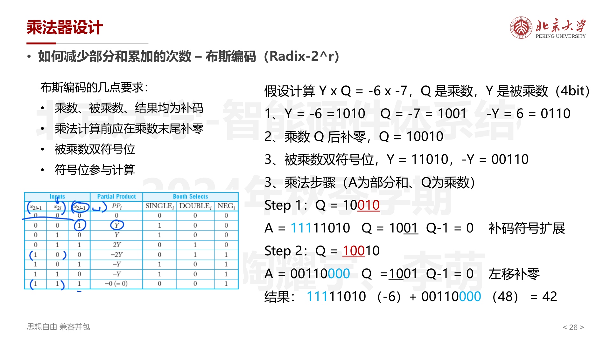
- \(Y = -6 = 1010\)，\(Q = -7 = 1001\)，\(-Y = 6 = 0110\)
- 乘数 Q 后补零：\(Q = 1001\underline{0}\)
- 被乘数双符号位：\(Y = 111010\)，\(-Y = 000110\)
- 按两位分组，查表确定每组的部分积：
- Step 1：查看 \(Q\) 的 \((x_1, x_0, x_{-1}) = (0, 1, 0)\) → 部分积 = \(Y = 111010\)，符号扩展后 \(A = 11111010\)
- Step 2：查看 \(Q\) 的 \((x_3, x_2, x_1) = (1, 0, 0)\) → 部分积 = \(-2Y = 000110\)，左移 2 位后 \(A = 00110000\)
- 结果：\(11111010 + 00110000 = 00101010 = 42\)
例 2： \(Y \times Q = -6 \times 7\)（6bit）
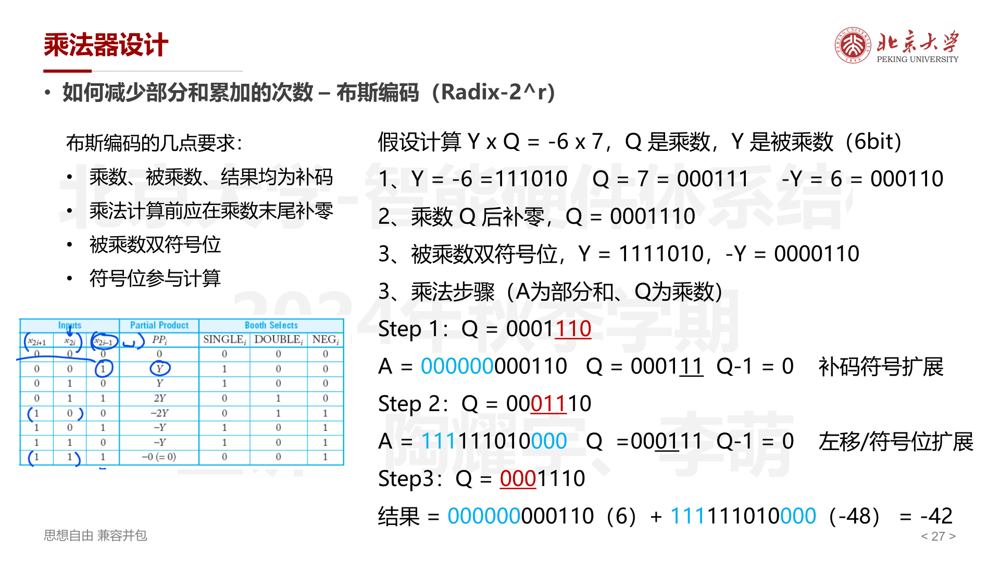
- \(Y = -6 = 111010\)，\(Q = 7 = 000111\)，\(-Y = 000110\)
- 乘数后补零：\(Q = 000111\underline{0}\)
- 被乘数双符号位：\(Y = 1111010\)，\(-Y = 0000110\)
- 三组部分积：
- Step 1：\((1, 1, 0)\) → \(-Y\)，\(A = 000000000110\)
- Step 2：\((0, 1, 1)\) → \(2Y\)，左移后 \(A = 111111010000\)
- Step 3：\((0, 0, 0)\) → \(0\)
- 结果：\(000000000110 + 111111010000 = 111111010110 = -42\)
乘法器设计总结¶
| 方法 | 部分积数量 | 乘法复杂度 | 关键优势 |
|---|---|---|---|
| 直接乘法 | N | \(O(N^2)\) | 最简单 |
| 阵列乘法器 (CSA) | N | \(O(N)\) 行 CSA + CPA | 规整结构，易于布局 |
| Radix-4 布斯编码 | N/2 | CSA 行数减半 | 部分积只需移位和取反 |
| Wallace Tree | N 或 N/2 | \(O(\log N)\) 行 CSA | 用树形压缩代替逐行累加 |
位移器设计¶
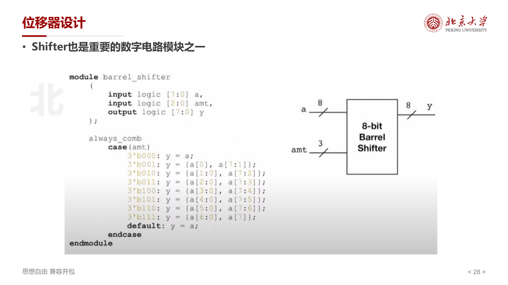
Barrel Shifter 通过多路选择器实现任意位数的循环移位，用 case 语句根据移位量 amt 选择输出。
复杂模块电路设计 1：卷积加速（Winograd）¶
卷积基础¶
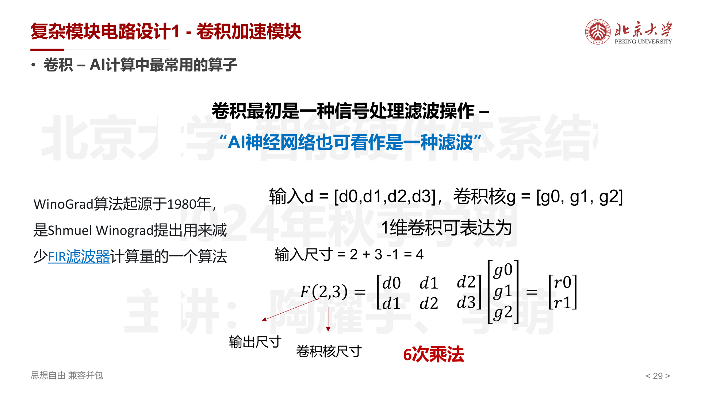
在深度学习加速器中，卷积是最核心的计算模式。理解卷积的硬件实现是设计AI芯片的基础。
一维卷积的直观理解：
给定输入信号 \(d = [d_0, d_1, d_2, d_3]\)（4个元素）和卷积核 \(g = [g_0, g_1, g_2]\)（3个元素），我们希望在输入上滑动卷积核，计算输出。当 步长（stride）为 1 时：
- 位置 0：卷积核覆盖 \([d_0, d_1, d_2]\)，输出 \(r_0 = d_0 \cdot g_0 + d_1 \cdot g_1 + d_2 \cdot g_2\)
- 位置 1：卷积核覆盖 \([d_1, d_2, d_3]\)，输出 \(r_1 = d_1 \cdot g_0 + d_2 \cdot g_1 + d_3 \cdot g_2\)
用矩阵形式表示（记作 \(F(2, 3)\)，表示输出 2 个值，卷积核大小为 3）：
为什么输入长度是 \(m + r - 1\)？
在 Winograd 记号 \(F(m, r)\) 中，\(m\) 是要计算的输出数量，\(r\) 是卷积核大小。输入信号的长度为 \(m + r - 1\)，这由卷积的滑动窗口机制决定：
- 第一个输出 \(r_0\) 需要覆盖输入的 \([d_0, d_1, \ldots, d_{r-1}]\)，共 \(r\) 个点
- 后续每个输出 滑动 1 位（stride = 1），与前一个窗口重叠 \(r - 1\) 个点
- 最后一个输出 \(r_{m-1}\) 覆盖 \([d_{m-1}, d_m, \ldots, d_{m+r-2}]\)
因此，要产生 \(m\) 个输出，输入总长度为：
图示理解（以 \(F(2, 3)\) 为例，输入长度 \(2 + 3 - 1 = 4\)）：
输入: [d0] [d1] [d2] [d3]
↑___↑___↑
| 窗口1 | → r0
↑___↑___↑
| 窗口2 | → r1
- 窗口1（位置0）：覆盖 d0, d1, d2 → 产生 r0
- 窗口2（位置1）：覆盖 d1, d2, d3 → 产生 r1
- 两个窗口重叠 d1, d2（共 \(r - 1 = 2\) 个点）
- 总输入点数 = 窗口大小 + (输出数 - 1) × 步长 = \(3 + (2-1) \times 1 = 4\)
直接计算的代价：
每个输出需要 3 次乘法和 2 次加法，2 个输出共需要 6 次乘法 和 4 次加法 。注意到输入矩阵中有重复元素（\(d_1, d_2\) 各出现两次），这意味着我们 重复计算 了某些乘积。
Winograd 的核心洞察：
如果巧妙地重新组织计算，利用中间结果的共享，可以减少乘法次数。乘法在硬件中比加法昂贵得多（面积、功耗、延迟），因此减少乘法能显著提升效率。
1D Winograd：减少乘法的原理¶
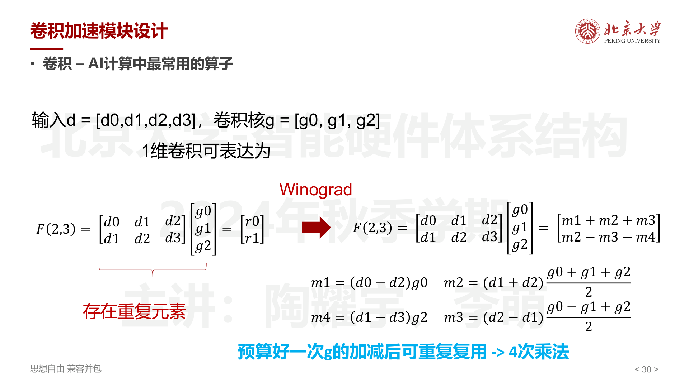
对于 \(F(2, 3)\) 卷积，Winograd 算法将乘法次数从 6 次降低到 4 次 。下面是完整的推导过程：
目标：计算 \(r_0 = d_0 g_0 + d_1 g_1 + d_2 g_2\) 和 \(r_1 = d_1 g_0 + d_2 g_1 + d_3 g_2\)
关键观察：输入数据有重叠。我们可以通过线性变换，让某些乘法结果被两个输出共享。
定义中间变量（4次乘法）：
然后通过加减组合得到输出：
验证正确性（展开 \(r_0\)）：
\(r_1\) 的验证类似。可以看到，通过精心设计的变换，我们用 4 次乘法 完成了原本需要 6 次乘法的工作。
Winograd 矩阵形式与变换矩阵¶
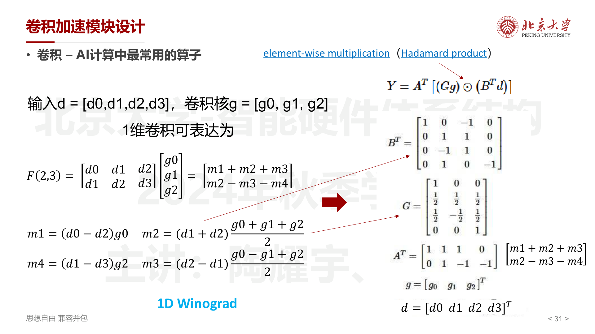
为了硬件实现的统一性和可扩展性，Winograd 算法被表示为统一的矩阵形式：
其中：
- \(d\) 是输入向量，维度 \((m + r - 1) \times 1 = 4 \times 1\)
- \(g\) 是卷积核向量，维度 \(r \times 1 = 3 \times 1\)
- \(Y\) 是输出向量，维度 \(m \times 1 = 2 \times 1\)
- \(\odot\) 表示逐元素乘法（Hadamard product）
对于 \(F(2, 3)\)，变换矩阵为：
输入变换矩阵 \(B^T\)（\(4 \times 4\)）：
卷积核变换矩阵 \(G\)（\(4 \times 3\)）：
输出变换矩阵 \(A^T\)（\(2 \times 4\)）：
计算过程分为 4 步：
-
输入变换：\(d' = B^T d\)
-
维度：\(4 \times 4\) 矩阵乘 \(4 \times 1\) 向量 = \(4 \times 1\) 向量
-
操作：纯加法/减法，无乘法
-
卷积核变换：\(g' = Gg\)
-
维度：\(4 \times 3\) 矩阵乘 \(3 \times 1\) 向量 = \(4 \times 1\) 向量
-
注意：\(g\) 是固定的，\(Gg\) 可以 离线预计算 存储在权重缓存中
-
逐元素乘法（核心计算）：\(e = g' \odot d'\)
-
\(e_i = g'_i \cdot d'_i\)，共 4 次乘法
-
这是唯一需要乘法器的步骤
-
输出变换：\(Y = A^T e\)
-
维度：\(2 \times 4\) 矩阵乘 \(4 \times 1\) 向量 = \(2 \times 1\) 向量
- 操作：纯加法/减法
硬件优势分析：
- 乘法次数：从 6 次降到 4 次，减少 33%
- 卷积核变换 \(Gg\) 可预计算，运行时只需查表
- 输入变换 \(B^T d\) 只有加减法，可用简单逻辑实现
- 对于更大的卷积核，收益更显著（如 \(F(4, 3)\) 乘法减少 50%）
Winograd 复杂度分析¶
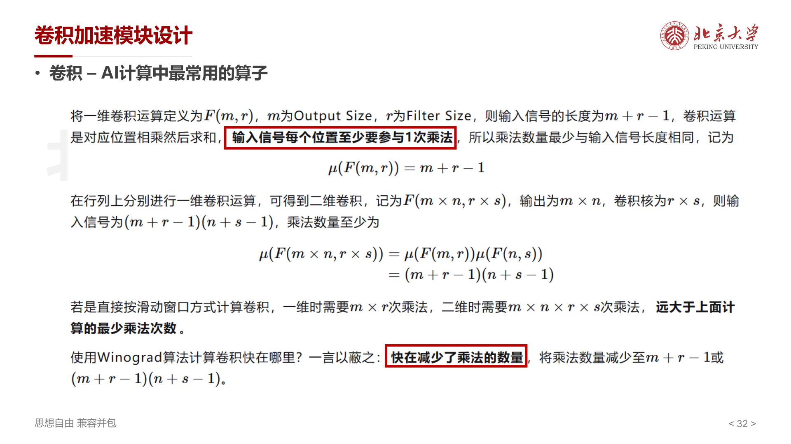
理论下界：对于一维卷积 \(F(m, r)\)（输出 \(m\) 个点，卷积核大小 \(r\)），最少需要的乘法次数为：
Winograd 算法达到了这个理论下界，因此是 最优的 。
对比：
| 算法 | 乘法次数 | 加法次数 |
|---|---|---|
| 直接计算 | \(m \times r\) | \(m \times (r-1)\) |
| Winograd | \(m + r - 1\) | 更多（变换引入） |
以 \(F(4, 3)\) 为例：
- 直接计算：\(4 \times 3 = 12\) 次乘法
- Winograd：\(4 + 3 - 1 = 6\) 次乘法，减少 50%
二维扩展：
二维卷积 \(F(m \times n, r \times s)\)（输出 \(m \times n\) 的二维块，卷积核 \(r \times s\)）：
以常见的 3×3 卷积核为例：
- \(F(4 \times 4, 3 \times 3)\)：\((4+3-1)(4+3-1) = 6 \times 6 = 36\) 次乘法
- 直接计算：\(4 \times 4 \times 3 \times 3 = 144\) 次乘法
- 减少 75% 的乘法！
2D Winograd：嵌套的一维算法¶
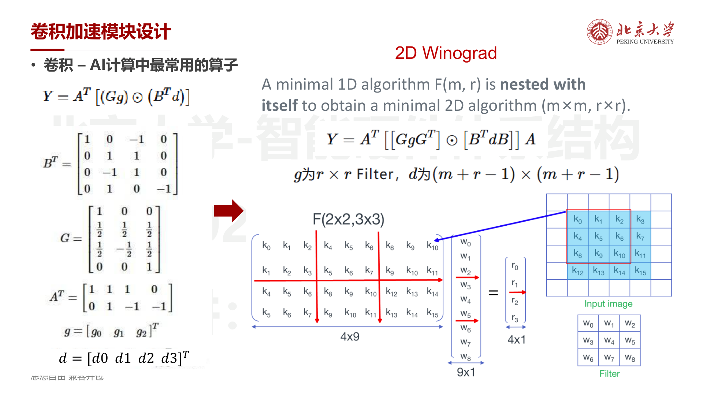
2D Winograd 通过 嵌套 1D 算法实现。对于图像卷积，我们先在行方向应用 1D Winograd，再在列方向应用。
矩阵形式：
其中：
- \(d\) 是输入 tile，维度 \((m+r-1) \times (n+s-1) = 6 \times 6\)（对于 \(F(4\times4, 3\times3)\)）
- \(g\) 是卷积核，维度 \(r \times s = 3 \times 3\)
- \(Y\) 是输出 tile，维度 \(m \times n = 4 \times 4\)
计算步骤详细拆解：
- 输入变换（\(B^T d B\)）：
- 先对 \(d\) 的每一行左乘 \(B^T\)：得到中间结果 \(d_{\text{row}} = B^T d\)
- 再对中间结果的每一列右乘 \(B\)：\(d' = d_{\text{row}} B = B^T d B\)
-
结果维度：\((m+r-1) \times (n+s-1) = 6 \times 6\)
-
卷积核变换（\(G g G^T\)）：
- 类似地，\(g' = G g G^T\)
- 维度：\((m+r-1) \times (n+s-1) = 6 \times 6\)
-
关键：可完全预计算
-
逐元素乘法（核心）：
- \(e = g' \odot d'\)
- \(6 \times 6 = 36\) 次乘法
-
每个元素相互独立，可 完全并行
-
输出变换（\(A^T e A\)）：
- 先对 \(e\) 的每一行左乘 \(A^T\)：\(e_{\text{row}} = A^T e\)
- 再对中间结果的每一列右乘 \(A\)：\(Y = e_{\text{row}} A = A^T e A\)
- 结果维度：\(m \times n = 4 \times 4\)
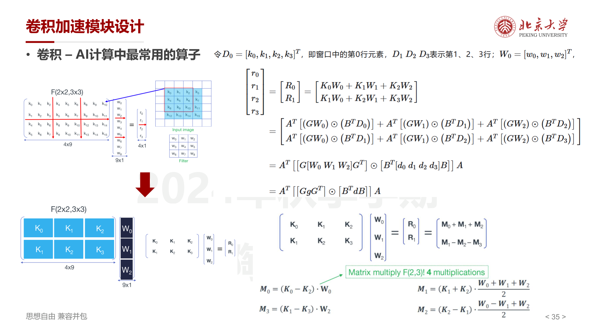
实际硬件数据流：
在典型的深度学习加速器（如 NVDLA）中，2D Winograd 的执行流程如下：
输入特征图 → [Tile 分割] → [输入变换单元] → [逐元素乘阵列] → [输出变换单元] → 输出特征图
↓ ↑
权重缓存 (存储预计算的 GgG^T) ------------------┘
- Tile 分割：将输入特征图切分成 \((m+r-1) \times (n+s-1)\) 的 overlapping tiles
- 输入变换单元：专用硬件计算 \(B^T d B\)，只有加减法
- 逐元素乘阵列：大规模的并行乘法器阵列（MAC 阵列），这是计算密度的核心
- 输出变换单元：计算 \(A^T e A\)，同样只有加减法
NVDLA 中的 Winograd 实现¶
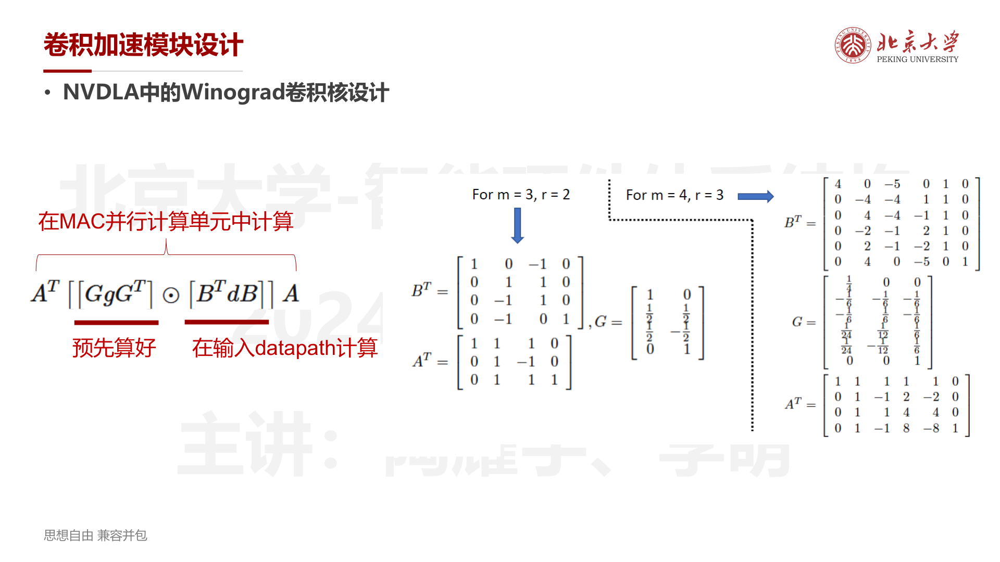
NVIDIA Deep Learning Accelerator (NVDLA) 是一个开源的深度学习推理加速器架构，它支持 Winograd 卷积加速。
NVDLA 的 Winograd 数据流：
- 权重离线处理：
- 训练好的 3×3 卷积核 \(g\) 在编译时通过 \(GgG^T\) 变换
- 变换后的权重存储在片外存储器（DDR）中
-
运行时加载到片内权重缓存
-
输入数据流：
- 从特征图加载 \((m+r-1) \times (n+s-1) = 6 \times 6\) 的 tile
- 在输入 datapath 中实时计算 \(B^T d B\)
-
使用专用加法器网络，延迟小
-
核心计算：
- 变换后的输入和权重送入 MAC 并行计算单元
- 通常是大规模的脉动阵列（Systolic Array）或并行乘法器组
-
每个周期完成 \((m+r-1)(n+s-1) = 36\) 个元素的逐元素乘
-
结果聚合：
- 逐元素乘结果通过 \(A^T [\cdot] A\) 变换得到最终输出
- 写回输出特征图
Winograd 的局限与适用场景：
Winograd 算法并非总是最优选择，需权衡以下因素：
| 因素 | Winograd 优势 | Winograd 劣势 |
|---|---|---|
| 卷积核大小 | 小卷积核（3×3）收益大 | 大卷积核变换矩阵过大 |
| 步长（Stride） | Stride=1 完美匹配 | Stride>1 需额外处理 |
| 填充（Padding） | 边界 tile 需特殊处理 | 增加控制复杂度 |
| 精度要求 | 乘法减少降低累积误差 | 变换引入额外舍入误差 |
| 硬件面积 | MAC 阵列面积减小 | 需额外的变换单元 |
实际部署建议：
- 对于 ResNet、VGG 等以 3×3 卷积为主的网络，Winograd 通常能带来 2~4 倍 的加速
- 第一/最后一层通常用直接卷积（特征图尺寸特殊）
- 1×1 卷积直接用矩阵乘法更高效
- 需通过软件栈自动选择最优算法
复杂模块电路设计 2：CORDIC¶
CORDIC（Coordinate Rotation Digital Computer）可以用来实现多种复杂非线性函数（sin、cos、arctan 等）。
旋转原理¶
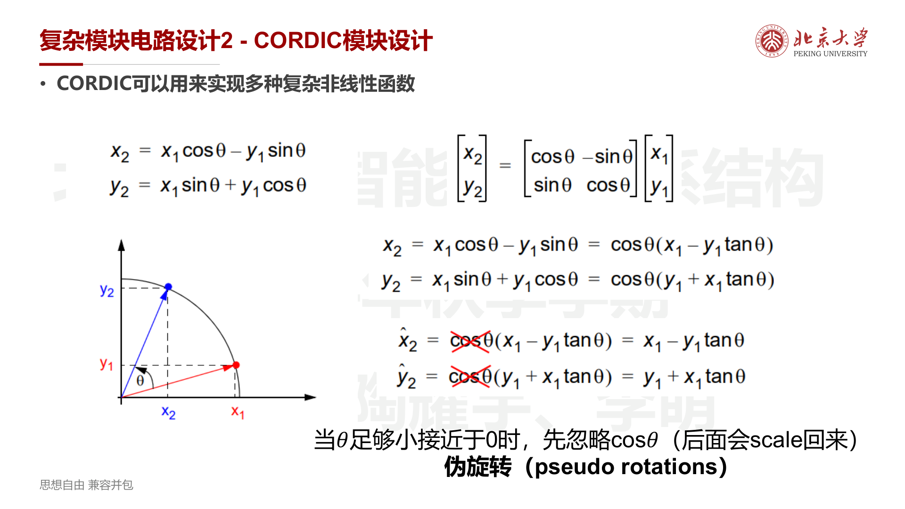
二维坐标旋转：
伪旋转¶
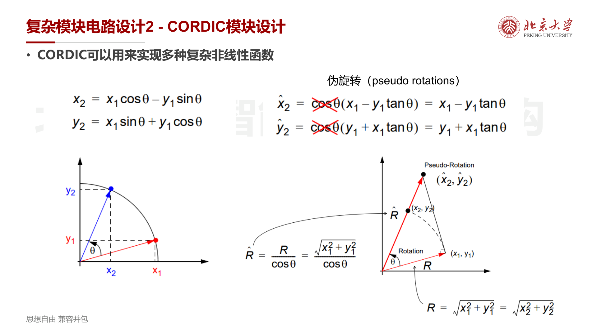
当 \(\theta\) 足够小时，忽略 \(\cos\theta\) 因子（后面通过 Scaling Factor 补偿）：
伪旋转的半径 \(\hat{R} = R / \cos\theta\) 会被放大。
选择旋转角度¶
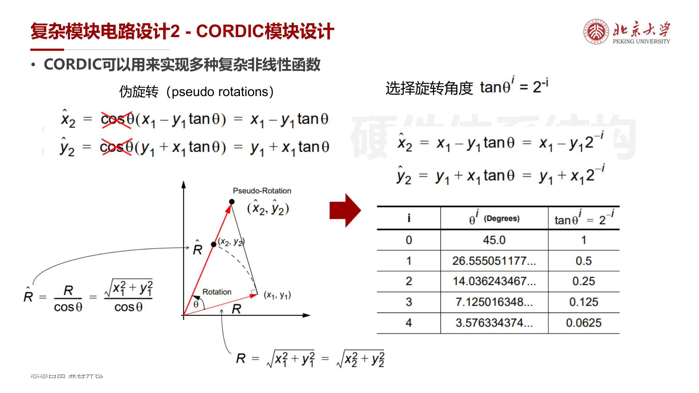
选择 \(\tan\theta^{(i)} = 2^{-i}\)，使得乘法变为 移位操作 ：
| i | \(\theta^{(i)}\) (度) | \(\tan\theta^{(i)} = 2^{-i}\) |
|---|---|---|
| 0 | 45.0 | 1 |
| 1 | 26.565 | 0.5 |
| 2 | 14.036 | 0.25 |
| 3 | 7.125 | 0.125 |
| 4 | 3.576 | 0.0625 |
CORDIC 迭代¶
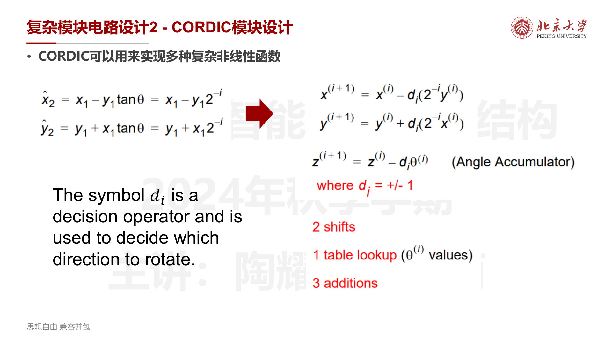
每次迭代的公式：
其中 \(d_i = \pm 1\) 为方向决策算子。每次迭代仅需：2 次移位 + 1 次查表 + 3 次加法 。
Scaling Factor¶
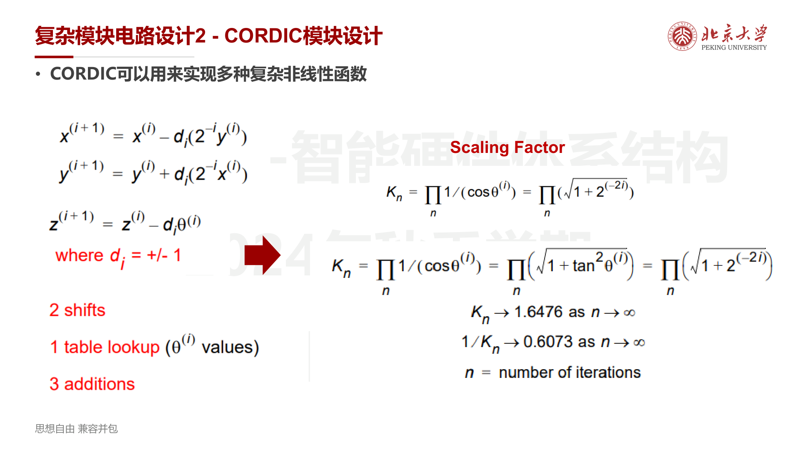
由于忽略了 \(\cos\theta\)，最终需要乘以缩放因子：
当 \(n \to \infty\) 时，\(K_n \to 1.6476\)，\(1/K_n \to 0.6073\)。
CORDIC 硬件架构¶
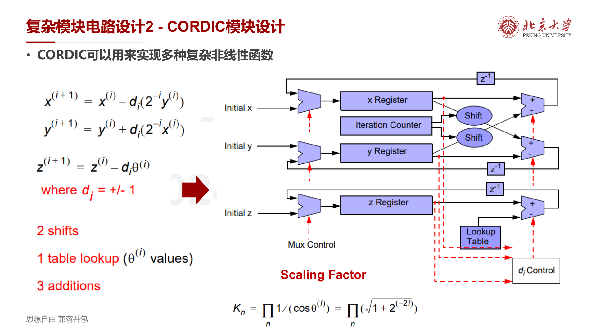
硬件包含三个寄存器（x、y、z），每次迭代通过移位器和加减法器更新，角度通过查找表（Lookup Table）获取，\(d_i\) 控制加/减方向。
控制单元设计与时序分析¶
状态机（FSM）¶
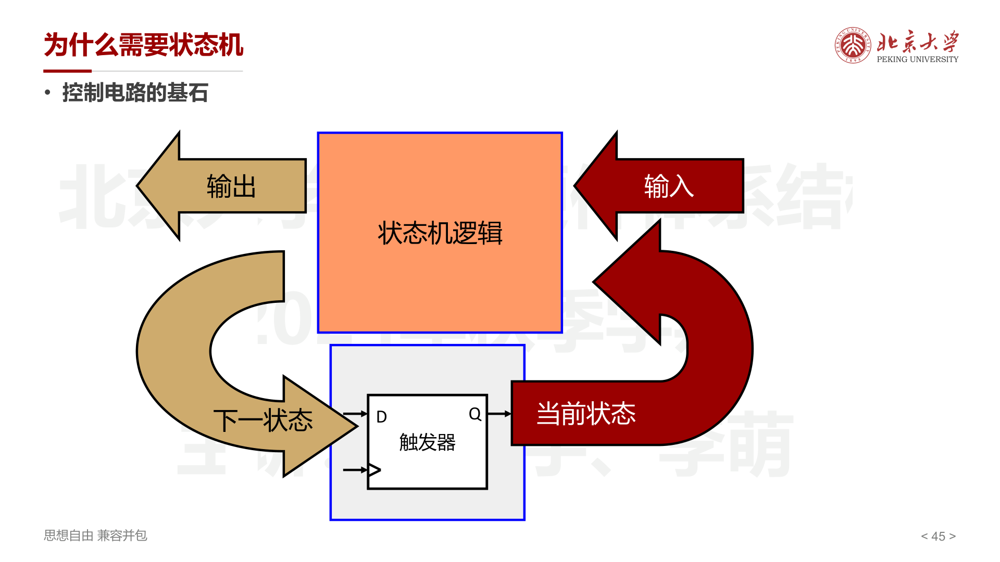
状态机是控制电路的基石，由三部分组成：
- 状态机逻辑 ：根据当前状态和输入，计算输出和下一状态
- 触发器 ：存储当前状态（D 触发器）
- 输入 / 输出接口
状态机设计实例：红绿灯¶
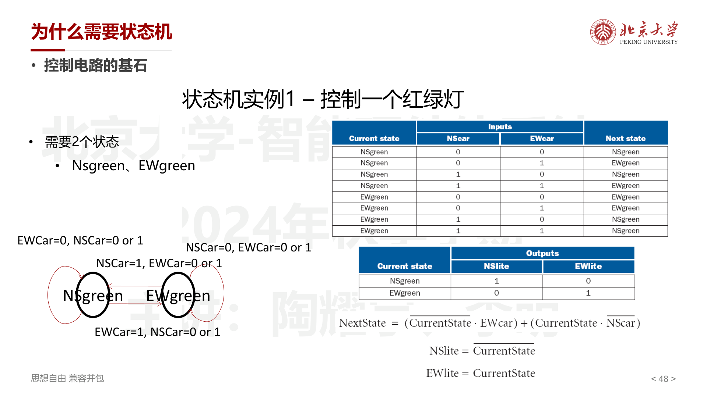
2 个状态（NSgreen、EWgreen），2 个输入（NScar、EWcar），2 个输出（NSlite、EWlite）。
逻辑表达式：
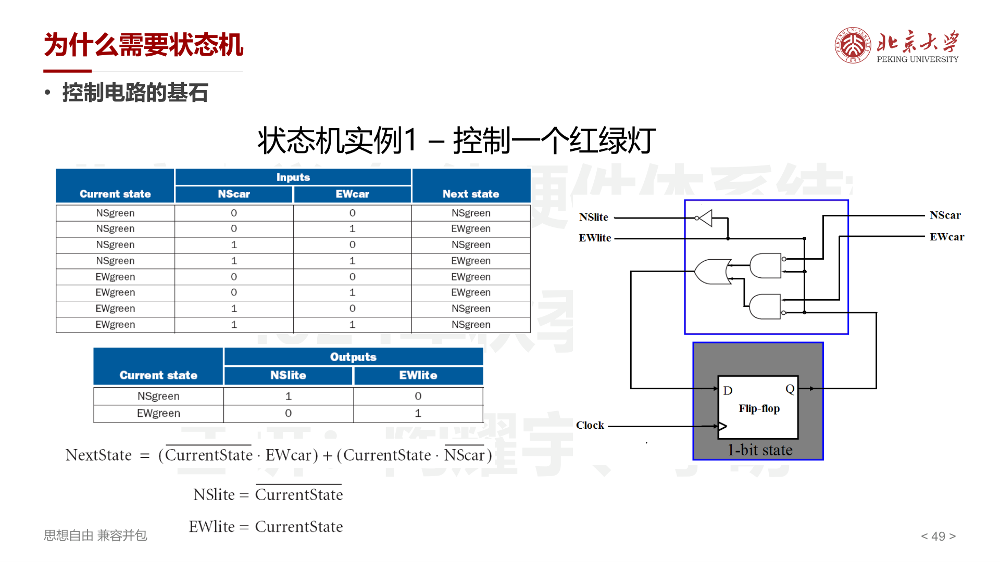
状态机设计步骤¶
- 定义状态并画出状态转换图
- 给每一个状态赋值并更新状态转换图
- 根据状态转换图写出下一状态和输出的逻辑表达式
- 画出实际电路图
状态在每一个 时钟上升沿 更新。
电路时序¶
为什么需要时钟¶
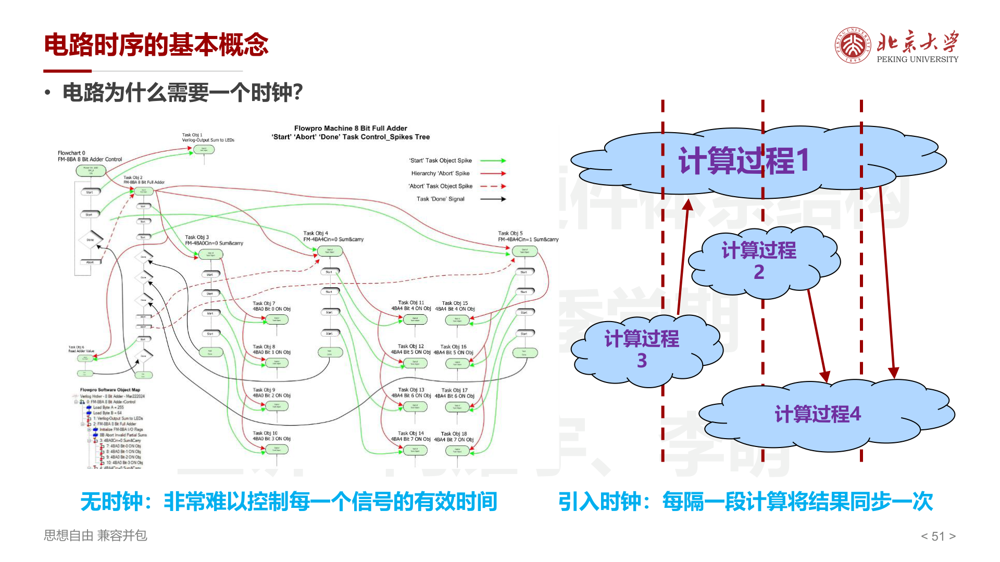
- 无时钟 ：非常难以控制每一个信号的有效时间
- 引入时钟 ：每隔一段计算将结果同步一次
同步时序¶
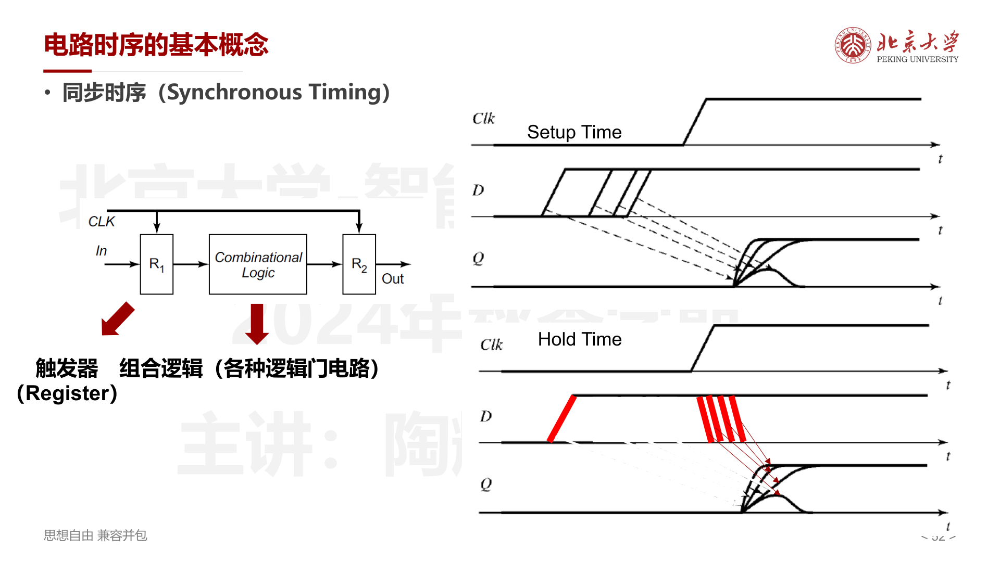
- Setup Time （\(t_{su}\)）：数据必须在时钟边沿 之前 稳定的最小时间
- Hold Time （\(t_{hold}\)）：数据必须在时钟边沿 之后 保持稳定的最小时间
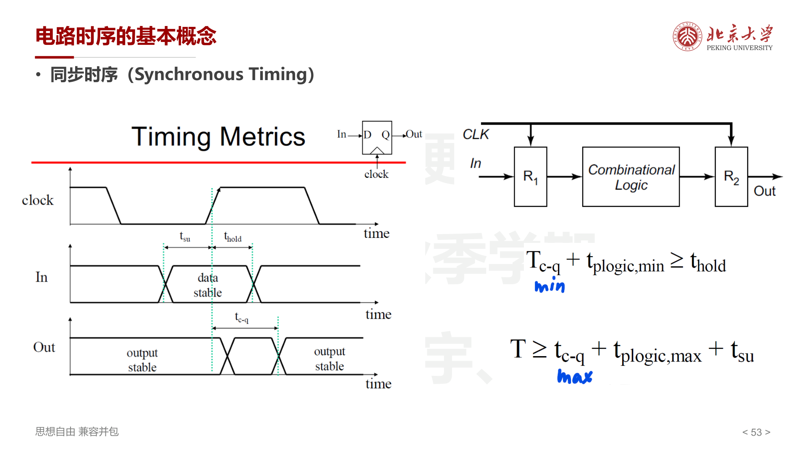
时序约束：
- 最小周期 ：\(T \geq t_{c\text{-}q} + t_{plogic,max} + t_{su}\)
- Hold 约束 ：\(T_{c\text{-}q,min} + t_{plogic,min} \geq t_{hold}\)
时钟不稳定性¶
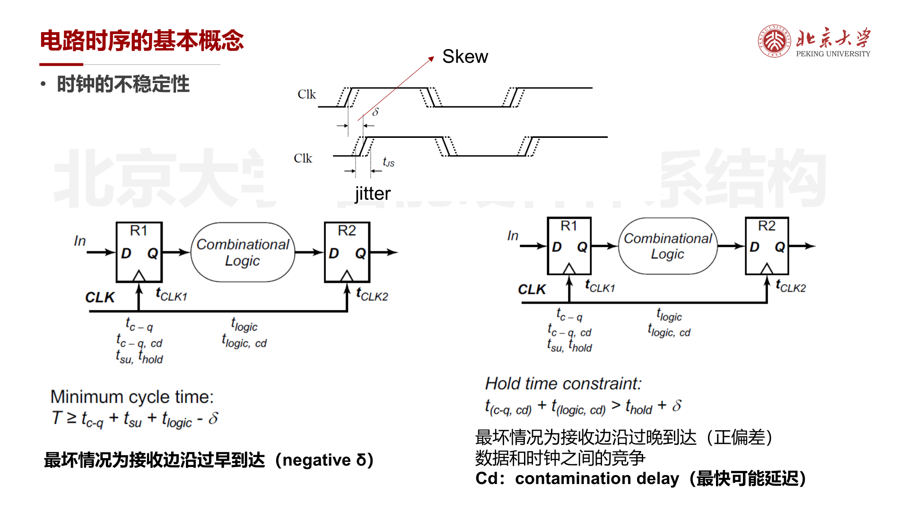
- Skew （\(\delta\)）：不同寄存器接收到的时钟边沿存在时间偏差
- Jitter ：时钟周期本身的抖动
考虑 Skew 后的约束：
- 最小周期：\(T \geq t_{c\text{-}q} + t_{su} + t_{logic} - \delta\)（最坏情况：接收边沿过早到达，\(\delta < 0\)）
- Hold 约束：\(t_{c\text{-}q,cd} + t_{logic,cd} > t_{hold} + \delta\)（最坏情况：接收边沿过晚到达，\(\delta > 0\)）
- Contamination delay （Cd）：最快可能延迟，用于检查 hold 违例
指令集设计与微架构基础¶
为什么需要指令集¶
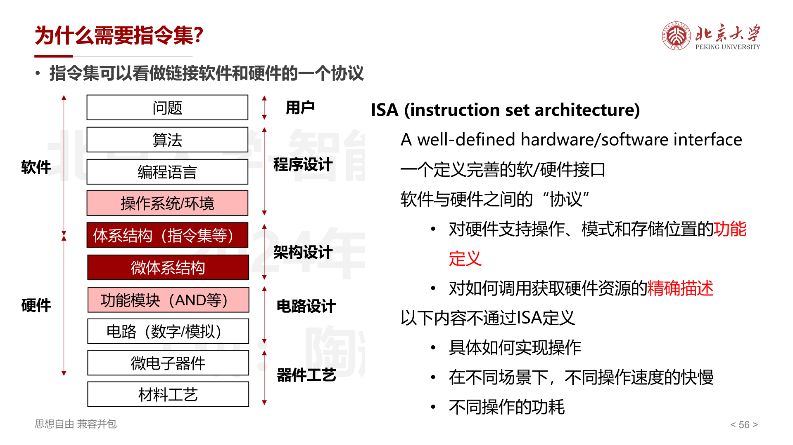
ISA（Instruction Set Architecture） 是定义完善的软/硬件接口，是软件与硬件之间的"协议"。
ISA 定义的内容：
- 硬件支持的操作、模式和存储位置的功能定义
- 如何调用获取硬件资源的精确描述
ISA 不 定义的内容：
- 具体如何实现操作
- 不同操作的速度和功耗
CISC vs RISC¶
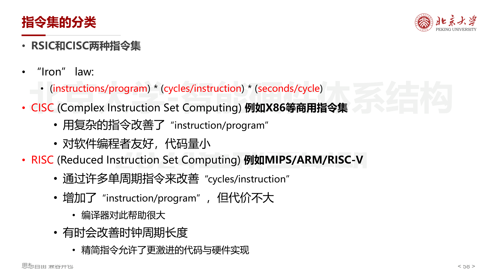
"Iron" law：\(\text{Time} = \frac{\text{instructions}}{\text{program}} \times \frac{\text{cycles}}{\text{instruction}} \times \frac{\text{seconds}}{\text{cycle}}\)
| CISC | RISC | |
|---|---|---|
| 代表 | x86 | MIPS / ARM / RISC-V |
| 思路 | 减少 instructions/program | 减少 cycles/instruction |
| 特点 | 指令复杂，代码量小 | 单周期指令多，依赖编译器优化 |
指令集设计需兼顾三方面：
- Programmability ：可以高效表达程序
- Implementability ：能设计出高性能/低功耗/低成本的硬件
- Compatibility ：在软件迭代后保持兼容性
冯诺依曼架构¶
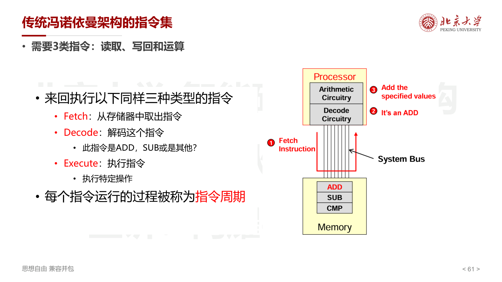
传统冯诺依曼架构需要 3 类指令：读取、写回和运算。
指令周期：Fetch（取指）→ Decode（解码）→ Execute（执行）
处理器 3 种主要组成部分：
- ALU （算术逻辑单元）：执行加减、逻辑运算
- 寄存器 ：处理器内部的快速暂存
- 控制电路 ：协调各部件工作
通过地址、数据和控制 总线（Bus） 与存储器和 I/O 连接。
寄存器的作用¶
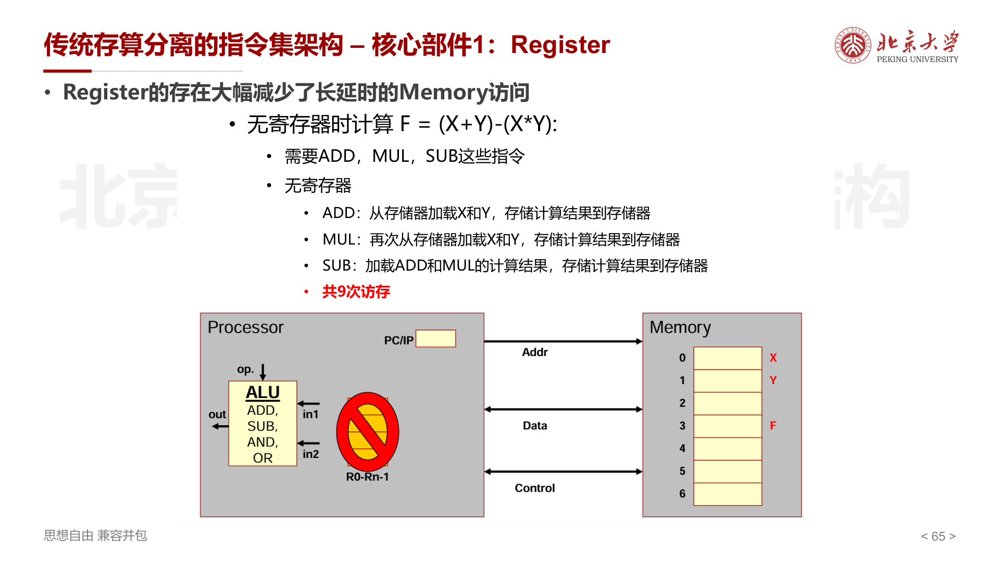
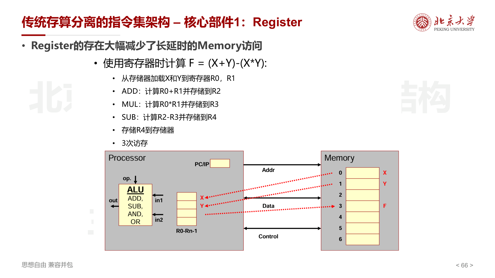
以计算 \(F = (X+Y) - (X \times Y)\) 为例：
- 无寄存器 ：每次运算都需从存储器加载和存储，共 9 次访存
- 有寄存器 ：先将 X、Y 加载到 R0、R1，中间结果存寄存器，共 3 次访存
寄存器还包括 PC/IP （程序计数器/指令指针），保存下一条要获取的指令地址。
指令集操作流程¶
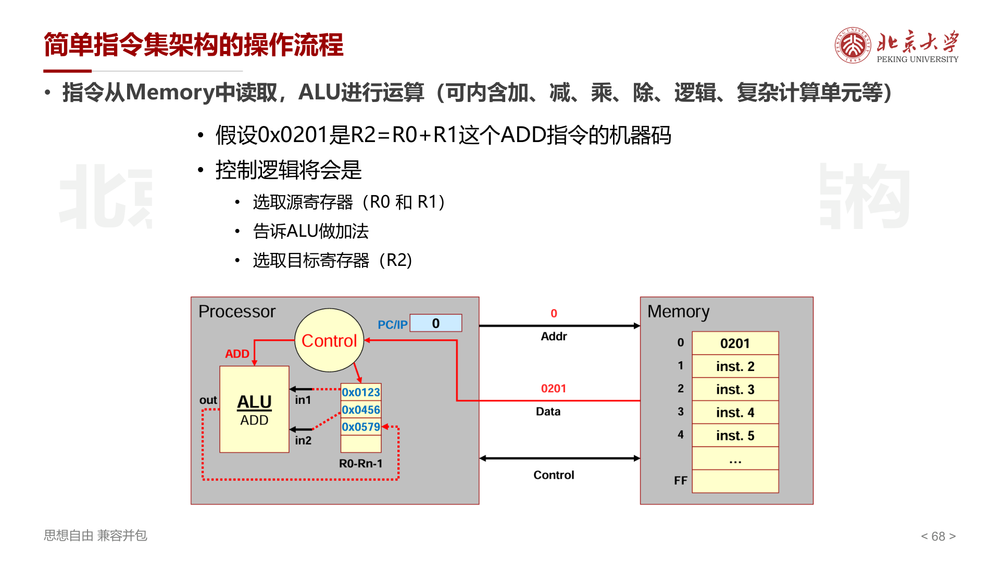
以 ADD 指令为例（机器码 0x0201 表示 R2=R0+R1）：
- PC/IP 指向地址 0，从 Memory 取出指令 0x0201
- 控制逻辑解码：选取源寄存器 R0、R1，告诉 ALU 做加法
- ALU 执行 0x0123 + 0x0456 = 0x0579，写入目标寄存器 R2
- PC/IP 自增，进入下一条指令
数据来源可以是：
- 寄存器值 （eg. %rax）
- 主存中的值 （eg. 0x0200e8）
- 立即数 （immediate，存储在指令内部的常量，eg. ADDI $1, D0）